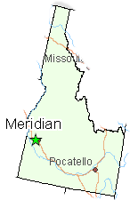

I go to Mountain View High School, located in Meridian, Idaho.

My favorite movies are The Matrix, Birdemic, Iron Man 3, Professor Layton, and The Super Mario Bros. Movie, most of which recieved very bad ratings, which is part of why I like them. They came across more as unintended comedy that whatever they were intended for.
My favorite food is Orange Chicken from Panda Express. That stuff is like asian americ- wait... nope, like american-chinese deliciousness.